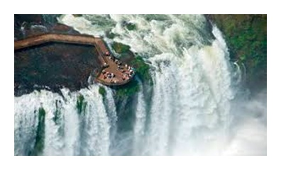
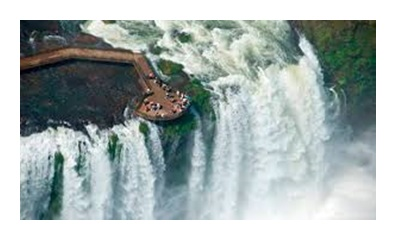

Iguazu Falls have been featured in several TV shows and movies like The Mission (1986), Indiana Jones and the Kingdom of Skull (2008), Captain America: Civil War (2016).
 

There are beautiful walkways which lead you to the core of the breathtaking scenario.It splits into approximately 275 discrete falls and large islands.